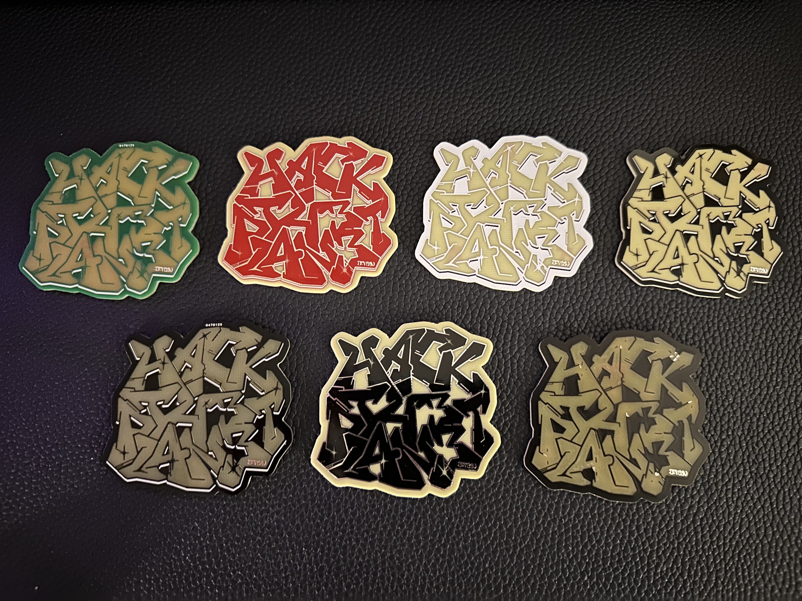
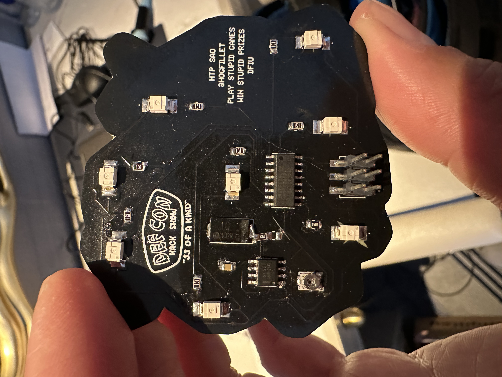
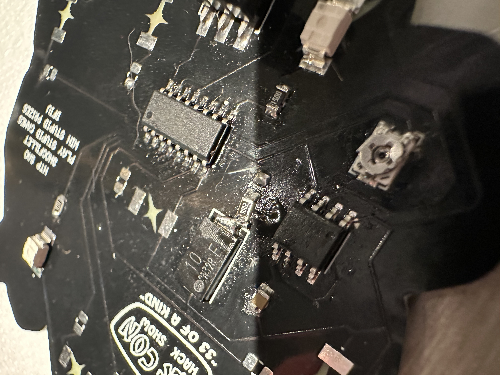
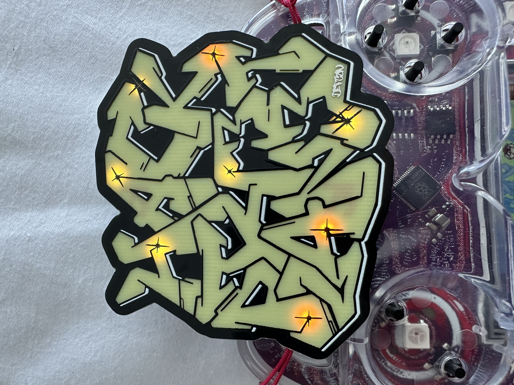
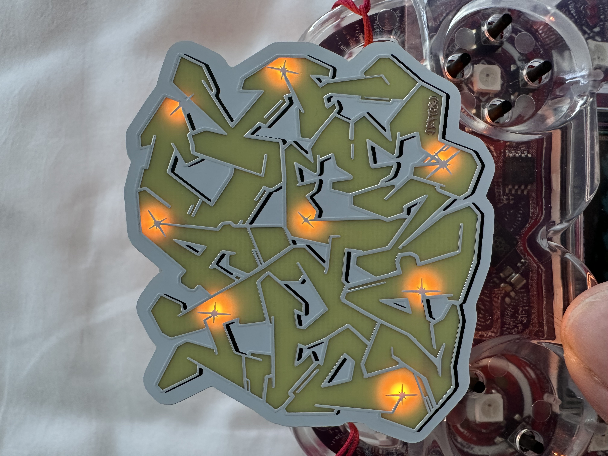

Building an SAO for DEF CON — 555 Timer LED Chaser
I've been working on a Simple Add-On (SAO) for DEF CON — a small self-contained LED chaser that uses purely analog components. No microcontroller, no programming, no firmware. Just a 555 timer, a 4017 decade counter, and eight LEDs doing their thing.

The complete set of boards
The Design
The concept is straightforward: a 555 timer generates clock pulses that feed into a CD4017 ten-step counter. Each clock pulse advances the counter to the next output, which lights up the corresponding LED. When it cycles through all the outputs, it wraps back around and starts over. The result is a sequential LED chase pattern — the kind of blinking circuit that's been a staple of electronics hobbyists for decades, but there's something satisfying about building one from scratch on a custom PCB.
The speed is adjustable via a TC33X-2-104E trimmer potentiometer (100kΩ SMD trimmer) that controls the charge rate of the timing capacitor. Turn it one way and the LEDs crawl; turn it the other way and they race. Range works out to roughly 0.1 to 1.2 seconds per step depending on where you set it.
Circuit Breakdown
The 555 runs in astable mode — free-running oscillator. The timing components:
- R1 (10kΩ): Between VCC and pin 7 (discharge)
- Trimmer pot: Pin 1 to VCC, pins 2 and 3 to the timing junction
- C1 (10µF electrolytic): Timing capacitor, positive to the junction (pins 2 & 6), negative to ground
- C2 (0.01µF): Decoupling cap on pin 5 (control voltage) to ground
Pin 3 (output) feeds directly into the 4017's clock input (pin 14). The 4017 steps through its ten outputs sequentially — I'm using eight of them for LEDs, with each output driving an LED through a 150Ω current-limiting resistor. At 3.3V supply with ~2V LED forward voltage, that works out to about 8.7mA per LED. Bright enough to see, conservative enough to not stress anything.
The LEDs are Würth Elektronik 155124YS73200 — yellow side-view SMD LEDs in a 1204 package. I went with side-view LEDs because I'm placing them in a random "constellation" pattern across the board rather than in a straight line. The randomness makes each board look a little different, which I like.
The Board
Designed in KiCad. Board dimensions are 60mm x 60mm — standard SAO territory. The SAO v2 connector (2x3 pin header) sits at the bottom center of the board. Only two pins are actually connected: VCC (3.3V) and ground. The I2C and GPIO pins are left floating — this SAO is entirely self-contained and doesn't need any interaction with the host badge.
Layout priorities were keeping the 555 timing components close together to minimize noise, short clock trace from the 555 output to the 4017 input, and then spreading the LEDs out across the remaining board space in that random pattern. Each LED gets its own 150Ω resistor placed close to it.
Added decoupling caps on both ICs — 0.01µF between VCC and ground, placed as close to the power pins as possible. The 4017 especially benefits from clean power since it's a CMOS part and can get glitchy with noisy supply rails.

Backside — circuit components

Backside — component layout
Component Choices
Went with SMD across the board since I wanted to practice my surface mount soldering. The resistors are RG2012P-151-B-T5 — Susumu thin-film, 150Ω, ±0.1% tolerance, 0805 package. Way more precision than this circuit needs, but they were available and the 0805 package is a nice size for hand soldering without being microscopic.
The trimmer pot doesn't need to be accessible after assembly — once you set the blink speed you like, you leave it. So it's buried on the board with the other components rather than positioned at an edge.
What I Learned
A few things came up during the design process:
The 555 pin 7 (discharge) should connect to R1 and VCC — not to the timing capacitor. Got that wrong initially. The discharge pin's job is to provide a path for the capacitor to discharge through the resistor, creating the oscillation. If you connect it directly to the cap, you short the discharge path and the timing breaks.
The 4017 works fine with fewer than ten LEDs connected. The outputs that don't have LEDs just pulse into nothing — the counter still steps through all ten positions, so you get a brief "dark" period in the sequence where no LED is lit. With eight LEDs on a ten-step counter, two steps are dark, which actually creates a nice visual pause in the chase pattern.
Decoupling capacitors go between each IC's power and ground pins — not between the two ICs. Each chip gets its own local energy reservoir to smooth out power supply noise. Seems obvious in retrospect, but it's one of those things where the schematic doesn't always make the physical placement intuitive.
Next Steps

Badge powered up

LEDs chasing